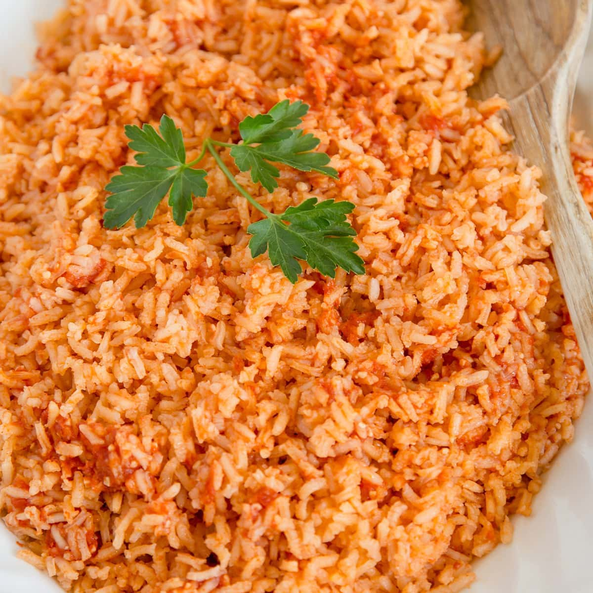

Mexican Rice

Description
Authentic Mexican rice. Makes about 3 cups serves 4-6.
Ingredients
- 1 cup long grain white Rice
- 1/8 small onion
- 1 clove garlic
- 1 Tbsp tomato paste
- 1 3/4 cups water
- 1 tsp Knorr caldo de pollo
- 1/2 tsp salt
- 3 Tbsp corn oil
Steps
- In a blender or food processor, puree tomato paste, onion and garlic with 1/4 cup water.
- In a medium heavy bottomed saucepan, heat corn oil over medium-high heat. When it's hot, add rice. Cook, stirring constantly, until golden brown and smells toasty
- Add tomato paste puree to rice and cook, stirring constantly 1 minute.
- Add remaining 1/2 cups water, calo de pollo and salt. Bring to a boil
- Once boiling, cover, turn heat down to lowest possible setting and simmer 20 minutes. Do not lift lid!
- When 20 minutes is up, turn heat off, lift lid to release excess steam and heat and recover. Let rest 10 more minutes.
- When 10 minutes is up fluff rice and serce.